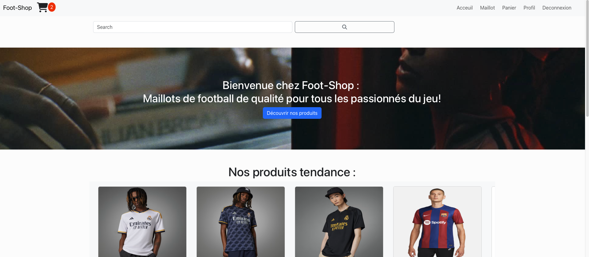
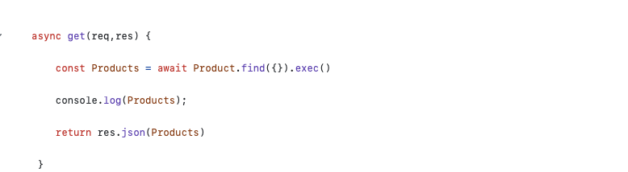
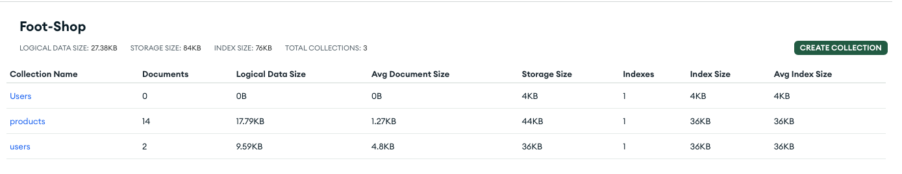
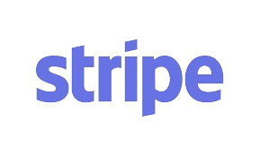
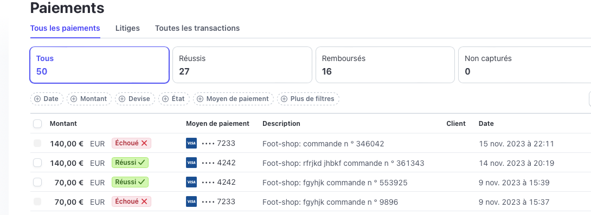
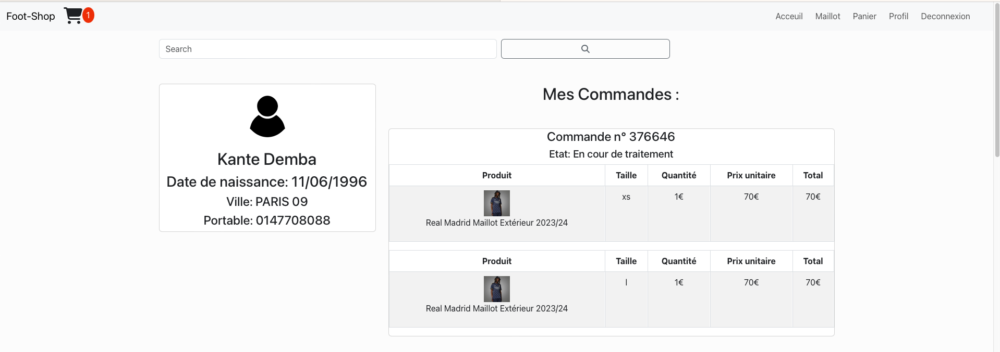

Foot-Shop
Description
Foot-Shop est une plateforme de vente en ligne spécialisée dans les maillots de football, offrant aux passionnés une expérience de shopping complète et sécurisée.
Fonctionnalités clés :
1-Système CRUD :
Grâce à notre backend basé sur Express et l'architecture MVC, notre application offre un système CRUD performant pour la gestion des produits, des utilisateurs et des commandes. Les opérations de création, lecture, mise à jour et suppression sont gérées de manière efficace pour une expérience utilisateur transparente.
3-Base de Données MongoDB :
Une base de données MongoDB assure une gestion efficace des données, offrant une extensibilité et une flexibilité pour stocker et récupérer les informations liées aux maillots, utilisateurs et transactions.
4-Système de Paiement Stripe :
Assurez-vous d'une transaction sécurisée avec notre intégration Stripe. Les utilisateurs peuvent effectuer des paiements en toute confiance grâce à cette solution de paiement sécurisée.
5-Interface Réactive avec ReactJS :
Le front-end dynamique de Foot-Shop est construit avec ReactJS, offrant une interface utilisateur réactive et fluide. Les utilisateurs peuvent naviguer facilement entre les catégories de maillots, personnaliser leurs choix et effectuer des paiements sans accroc.
6 - Gestion de Compte et Notifications:
Les utilisateurs peuvent créer un compte, suivre leurs commandes, enregistrer leurs préférences et recevoir des notifications sur les promotions, les nouvelles sorties et les mises à jour du site. Pour cela, nous avons effectuer des requetes vers la base de données avec fetch coté ReactJS qui va en direction du backend Express qui lui va faire les instructions demandés a la bdd
7-Sécurité et Confidentialité :
La sécurité est une priorité chez Foot-Shop. Les informations personnelles des utilisateurs, les transactions et les données sensibles sont protégées par des protocoles de sécurité avancés avec https.
Foot-Shop vise à offrir une expérience de shopping en ligne immersive, alliant la passion pour le football à une technologie de pointe. Grâce à notre base de données MongoDB, notre backend Express, l'architecture MVC, et l'intégration Stripe, Foot-Shop garantit une plateforme sécurisée, efficace et conviviale pour tous les amateurs de maillots de football.